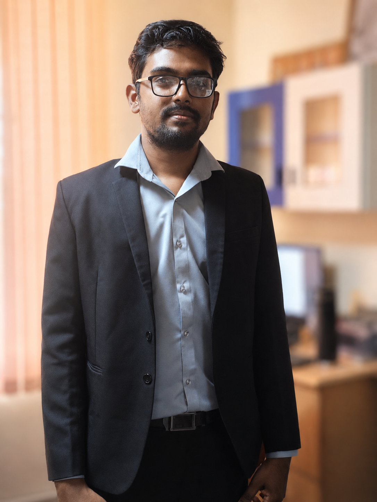

A physicist working at the intersection of complex systems, nonlinear dynamics, and data-driven science. My research focuses on mathematical modeling, noise-induced dynamics, emergent phenomena, and machine learning approaches for understanding and predicting the behavior of complex dynamical systems.

I am a currently a Postdoctoral Researcher (Senior Project Officer) at the Indian Institute of Technology Madras (IITM), Chennai, working on a FedEx Industry Sponsored Project. My broader mission is to advance the understanding of complex dynamical systems by investigating the mechanisms underlying natural phenomena and their prediction using machine learning.
I aim to develop robust frameworks that not only explain the emergence of complex nonlinear phenomena but also provide tools for anticipating and controlling them in real-world systems.
Current Designation:
Postdoctoral Researcher (Senior Project Officer)
Indian Institute of Technology Madras, Chennai — 600036, India
FedEx Industry Sponsored Project
Investigating associative memory and pattern retrieval in coupled nonlinear oscillator networks. Exploring how collective dynamics, synchronization, and network architecture influence memory storage, retrieval, and robustness in biologically inspired systems.
Exploring social networks as complex dynamical systems to understand information diffusion, collective behavior, and emergent phenomena. Developing theoretical and data-driven models to predict information cascades and large-scale social dynamics.
Exploring the mechanisms of noise-induced extreme events in FitzHugh–Nagumo and Hindmarsh–Rose neuron models — from single units to globally coupled and multiplex networks. Introduced a novel measure to characterize EE at microscopic and macroscopic scales.
Developed a novel ESN algorithm — Clustered ESN — for multivariate time series prediction, with application to stock market data and solar wind measurements. Explored the role of various reservoir topologies in prediction accuracy.
Applied Detrended Fluctuation Analysis (DFA) to sunspot data to investigate long-memory effects in solar extreme events. Characterized long-range dependence, long-tail distributions, and inter-event interval (IEI) distributions.
Comprehensive study of noise-induced extreme events in integer and fractional-order memristive Hindmarsh–Rose neuron models, revealing the distinct roles of fractional dynamics and memristive coupling.
I'm open to discussions on research collaborations, postdoctoral opportunities, conference invitations, or just an engaging conversation about nonlinear dynamics, stochastic systems, and machine learning. Feel free to reach out.